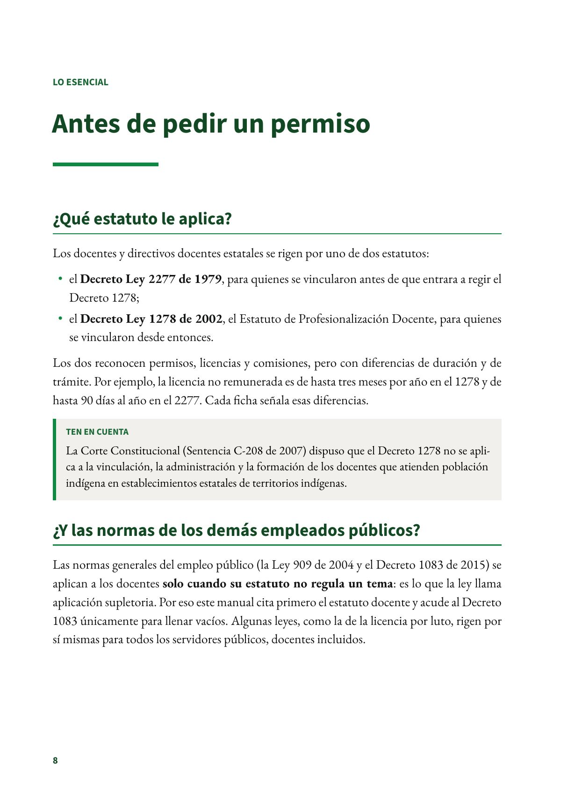
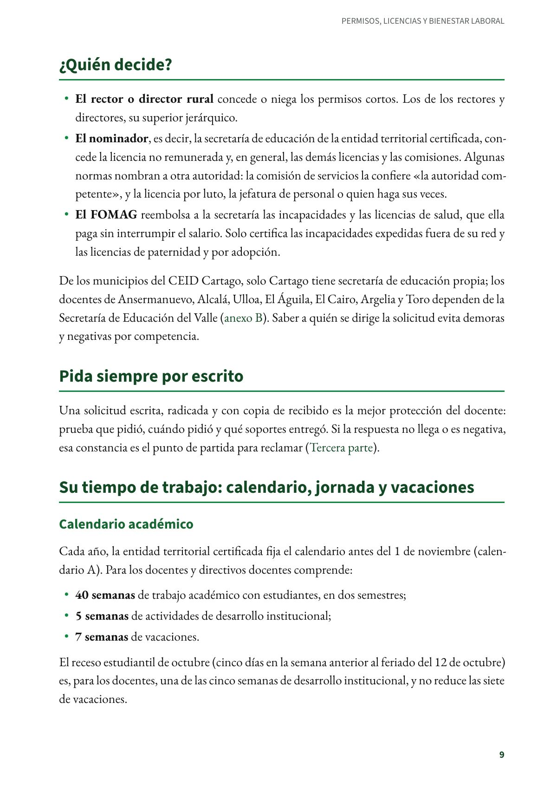
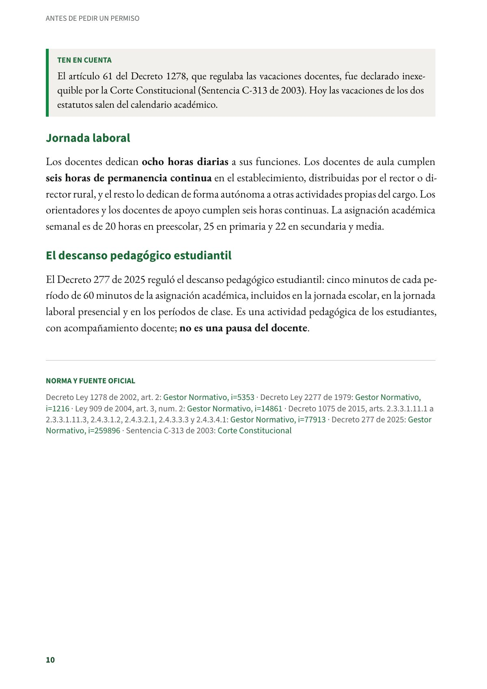

Antes de pedir un permiso
Qué estatuto le aplica, cuándo rigen las normas generales, quién decide y cómo son el calendario, la jornada y las vacaciones.
PDF · 3 págs. · 56 KB¿Qué estatuto le aplica?
Los docentes y directivos docentes estatales se rigen por uno de dos estatutos:
- el Decreto Ley 2277 de 1979, para quienes se vincularon antes de que entrara a regir el Decreto 1278;
- el Decreto Ley 1278 de 2002, el Estatuto de Profesionalización Docente, para quienes se vincularon desde entonces.
Los dos reconocen permisos, licencias y comisiones, pero con diferencias de duración y de trámite. Por ejemplo, la licencia no remunerada es de hasta tres meses por año en el 1278 y de hasta 90 días al año en el 2277. Cada ficha señala esas diferencias.
Ten en cuenta
La Corte Constitucional (Sentencia C-208 de 2007) dispuso que el Decreto 1278 no se aplica a la vinculación, la administración y la formación de los docentes que atienden población indígena en establecimientos estatales de territorios indígenas.
¿Y las normas de los demás empleados públicos?
Las normas generales del empleo público (la Ley 909 de 2004 y el Decreto 1083 de 2015) se aplican a los docentes solo cuando su estatuto no regula un tema: es lo que la ley llama aplicación supletoria. Por eso este manual cita primero el estatuto docente y acude al Decreto 1083 únicamente para llenar vacíos. Algunas leyes, como la de la licencia por luto, rigen por sí mismas para todos los servidores públicos, docentes incluidos.
¿Quién decide?
- El rector o director rural concede o niega los permisos cortos. Los de los rectores y directores, su superior jerárquico.
- El nominador, es decir, la secretaría de educación de la entidad territorial certificada, concede la licencia no remunerada y, en general, las demás licencias y las comisiones. Algunas normas nombran a otra autoridad: la comisión de servicios la confiere «la autoridad competente», y la licencia por luto, la jefatura de personal o quien haga sus veces.
- El FOMAG reembolsa a la secretaría las incapacidades y las licencias de salud, que ella paga sin interrumpir el salario. Solo certifica las incapacidades expedidas fuera de su red y las licencias de paternidad y por adopción.
De los municipios del CEID Cartago, solo Cartago tiene secretaría de educación propia; los docentes de Ansermanuevo, Alcalá, Ulloa, El Águila, El Cairo, Argelia y Toro dependen de la Secretaría de Educación del Valle (anexo B). Saber a quién se dirige la solicitud evita demoras y negativas por competencia.
Pida siempre por escrito
Una solicitud escrita, radicada y con copia de recibido es la mejor protección del docente: prueba que pidió, cuándo pidió y qué soportes entregó. Si la respuesta no llega o es negativa, esa constancia es el punto de partida para reclamar (Tercera parte).
Su tiempo de trabajo: calendario, jornada y vacaciones
Calendario académico
Cada año, la entidad territorial certificada fija el calendario antes del 1 de noviembre (calendario A). Para los docentes y directivos docentes comprende:
- 40 semanas de trabajo académico con estudiantes, en dos semestres;
- 5 semanas de actividades de desarrollo institucional;
- 7 semanas de vacaciones.
El receso estudiantil de octubre (cinco días en la semana anterior al feriado del 12 de octubre) es, para los docentes, una de las cinco semanas de desarrollo institucional, y no reduce las siete de vacaciones.
Ten en cuenta
El artículo 61 del Decreto 1278, que regulaba las vacaciones docentes, fue declarado inexequible por la Corte Constitucional (Sentencia C-313 de 2003). Hoy las vacaciones de los dos estatutos salen del calendario académico.
Jornada laboral
Los docentes dedican ocho horas diarias a sus funciones. Los docentes de aula cumplen seis horas de permanencia continua en el establecimiento, distribuidas por el rector o director rural, y el resto lo dedican de forma autónoma a otras actividades propias del cargo. Los orientadores y los docentes de apoyo cumplen seis horas continuas. La asignación académica semanal es de 20 horas en preescolar, 25 en primaria y 22 en secundaria y media.
El descanso pedagógico estudiantil
El Decreto 277 de 2025 reguló el descanso pedagógico estudiantil: cinco minutos de cada período de 60 minutos de la asignación académica, incluidos en la jornada escolar, en la jornada laboral presencial y en los períodos de clase. Es una actividad pedagógica de los estudiantes, con acompañamiento docente; no es una pausa del docente.
Norma y fuente oficial
Decreto Ley 1278 de 2002, art. 2: Gestor Normativo · Decreto Ley 2277 de 1979: Gestor Normativo · Ley 909 de 2004, art. 3, num. 2: Gestor Normativo · Decreto 1075 de 2015, arts. 2.3.3.1.11.1 a 2.3.3.1.11.3, 2.4.3.1.2, 2.4.3.2.1, 2.4.3.3.3 y 2.4.3.4.1: Gestor Normativo · Decreto 277 de 2025: Gestor Normativo · Sentencia C-313 de 2003: Corte Constitucional
Así se ve en el libro
3 páginas

